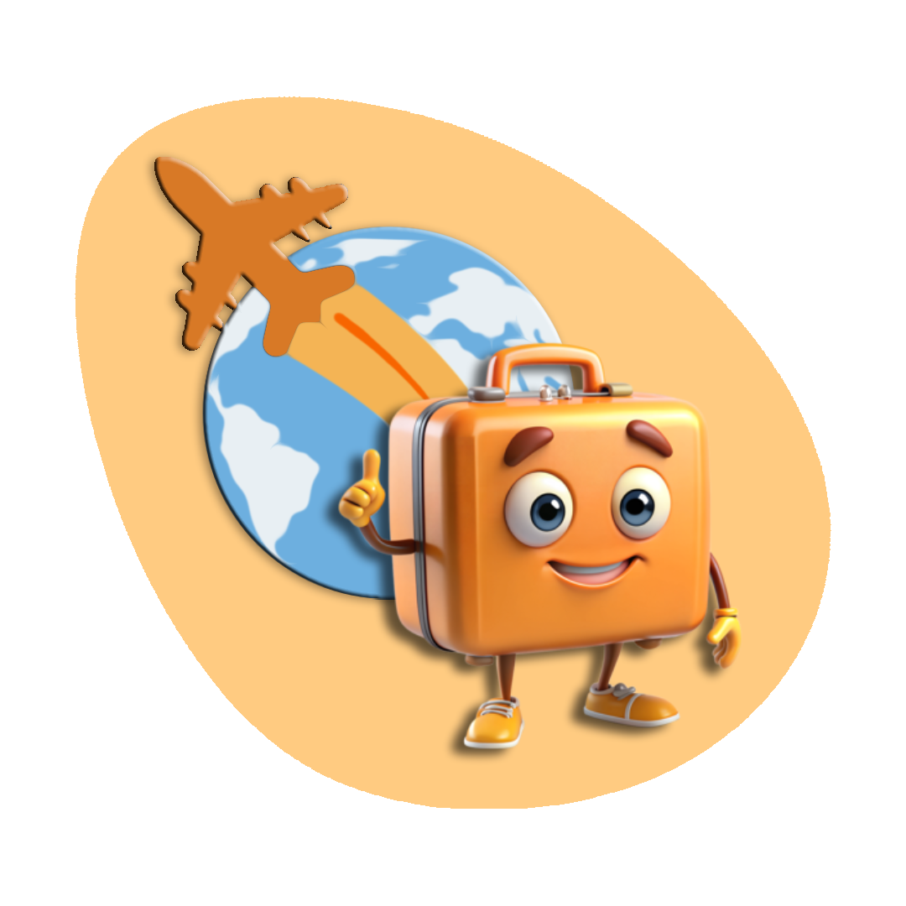

Bok, ja sam Putnik!
Želiš putovati, ali ne znaš kamo?
Mogu ti pomoći odabrati savršeno mjesto za putovanje!

Mogu ti pomoći odabrati savršeno mjesto za putovanje!
Putnik je ChatBot stvoren kako bi pomogao u pronalasku savršene destinacije za putovanje. Ovisno o vrsti putovanja, vremenu, broju osoba i budžetu, Putnik ChatBot može pronaći najbolju opciju putovanja za korisnika!